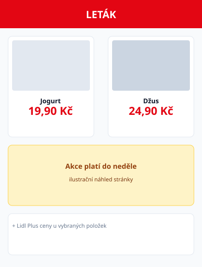

Kontrola letáku
Soubor: lidl-tyden.pdf
PDF: 24 stran
Obchod: Lidl CZ
Aktuální: stránka 5 / 24
24
Stran v PDF
18
Řádků načteno
—
Schváleno
5
Aktuální str.
Rychlý výběr stránky (mock)
Náhled stránky (vykresleno z PDF)
AI vidí totéž

Extrakce (Lidl CZ) — stránka 5 / 24
Tato stránka se převede na PNG a pošle do modelu striktního parseru. Výsledek se validuje a zobrazí pod tímto blokem; pak můžeš přejít na stránku 6 a opakovat.
V produkční aplikaci funguje stejný postup s tvým PDF — bez ručního exportu PNG.
Řádky (staging) — výstup pro str. 5
| extracted_name | price_total | pack | |
|---|---|---|---|
| Jogurt bílý 150 g | 19,90 | 1×150 g | |
| Džus pomeranč 1 l | 24,90 | 1×1 l | |
| Salát balený | null | — |
Sloupce odpovídají schématu LidlPageOffer /
offers_staging.